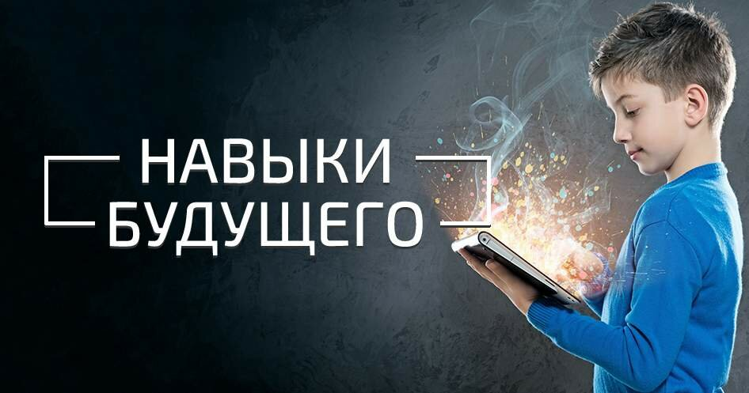

Искусственный интеллект в образовании: революция или угроза?
15 марта 2024Автор: Иван Петров
Искусственный интеллект стремительно меняет образовательный ландшафт. От персонализированного обучения до автоматической проверки заданий - ИИ предлагает множество возможностей для улучшения образовательного процесса.... Однако возникает важный вопрос: как найти баланс между технологическими инновациями и сохранением человеческого фактора в образовании? ИИ может анализировать успеваемость студентов, адаптировать учебные материалы под индивидуальные потребности и даже предсказывать потенциальные трудности в обучении. Но при этом важно сохранить человеческое взаимодействие и творческий подход к образованию.
Комментарии (3)
Отличная статья! Очень интересный взгляд на будущее образования.
- Мария Смирнова
Тренды онлайн-образования в 2024 году
10 марта 2024Автор: Анна Иванова
Онлайн-образование продолжает развиваться стремительными темпами. В 2024 году мы наблюдаем появление новых форматов обучения, интеграцию виртуальной реальности и усиление социального компонента в онлайн-курсах.... Как эти изменения влияют на эффективность обучения и какие навыки будут наиболее востребованы в ближайшие годы? Виртуальная реальность позволяет создавать иммерсивные образовательные среды, где студенты могут практиковаться в безопасных условиях. Социальные элементы, такие как групповые проекты и обсуждения, помогают развивать коммуникативные навыки и создавать профессиональные связи.
Комментарии (5)
Согласен с автором, VR действительно меняет подход к обучению.
- Алексей Козлов

Ключевые навыки для успеха в цифровую эпоху
5 марта 2024Автор: Сергей Соколов
В условиях быстро меняющегося рынка труда особенно важно понимать, какие навыки будут востребованы в ближайшем будущем. Критическое мышление, эмоциональный интеллект, адаптивность и цифровая грамотность становятся ключевыми компетенциями.... Как развивать эти навыки и почему они так важны для профессионального успеха? В эпоху автоматизации и искусственного интеллекта, именно эти "мягкие навыки" становятся ключевыми факторами успеха. Они позволяют эффективно работать в команде, решать сложные проблемы и адаптироваться к новым технологиям и методам работы.Более того, исследования показывают, что специалисты с развитыми soft skills не только легче находят работу, но и быстрее продвигаются по карьерной лестнице, так как умеют выстраивать продуктивные отношения и находить нестандартные решения в условиях неопределенности.
Комментарии (7)
Очень полезная информация для планирования карьеры.

Комментарии (3)
Отличная статья! Очень интересный взгляд на будущее образования.
- Мария Смирнова